লিনিয়ার অ্যালজেব্রার অন্য সব বিষয়কে একসাথে 'ক্লিক' করে দেওয়ার মতো একটি বিষয় যদি থাকে, তবে তা হলো এই অধ্যায়—রৈখিক রূপান্তর এবং ম্যাট্রিক্সের সাথে সম্পর্ক। এখানে আমরা দ্বিমাত্রিক ক্ষেত্রে রৈখিক রূপান্তরগুলো কেমন দেখায় তা নিয়ে আলোচনা করব এবং ম্যাট্রিক্স-ভেক্টর গুণনের সাথে সেগুলোর সম্পর্ক বুঝব। বিশেষ করে, আমরা এমন একটি উপায় দেখাব যা মুখস্থ করার ওপর নির্ভর না করেই ম্যাট্রিক্স গুণন বোঝার সুযোগ দেয়।
লিনিয়ার অ্যালজেব্রার মূল প্রাণকেন্দ্র হলো রৈখিক রূপান্তর (Linear Transformation) এবং তাদের সাথে ম্যাট্রিক্সের অবিচ্ছেদ্য সম্পর্ক বোঝা। কিন্তু এই বিষয়ে প্রবেশ করার আগে আমাদের স্পষ্ট হতে হবে—“রূপান্তর” (Transformation) বলতে আমরা আসলে কী বুঝি?
সহজ কথায়, একটি রূপান্তর মূলত একটি ফাংশন ছাড়া কিছুই নয়। সাধারণ উচ্চমাধ্যমিক গণিতে আমরা এমন ফাংশন দেখে অভ্যস্ত যা একটি বাস্তব সংখ্যা ইনপুট নেয় এবং আরেকটি সংখ্যা আউটপুট দেয়—যেমন $f(x) = x^2$। কিন্তু লিনিয়ার অ্যালজেব্রায় আমরা এমন এক চমৎকার ফাংশনের কথা বলি যা একটি ভেক্টর ইনপুট গ্রহণ করে এবং আরেকটি ভেক্টর আউটপুট প্রদান করে।
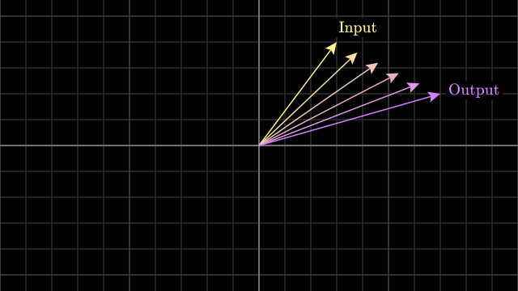
তাহলে প্রশ্ন জাগতে পারে: যদি এটি কেবলই একটি ফাংশন হয়, তবে গণিতবিদরা কেন একে “ফাংশন” না বলে বিশেষভাবে “রূপান্তর” (Transformation) নাম দেন? এর কারণ হলো জ্যামিতিক দৃষ্টিশক্তি! “রূপান্তর” শব্দটি আমাদের মনের ভেতর একটি নিখুঁত জ্যামিতিক গতির অনুভূতি এনে দেয়—যেন পুরো দ্বিমাত্রিক বা ত্রিমাত্রিক স্থানটি নিজে নড়াচড়া করছে, মোচড় খাচ্ছে বা প্রসারিত হচ্ছে।
একটি ইনপুট ভেক্টরকে তার আউটপুট ভেক্টরে পরিবর্তিত হতে দেখার সবচেয়ে কল্পনাপ্রসূত ও প্রাণবন্ত উপায় হলো ভেক্টরটিকে এক স্থান থেকে অন্য স্থানে গতিশীল (Move) হতে দেখা:
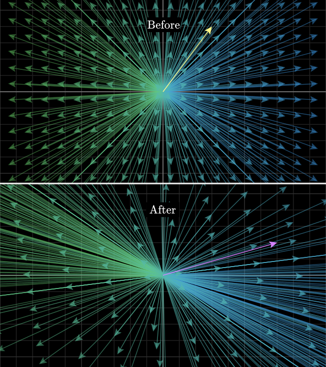
এবার সমগ্র রূপান্তরটিকে একনজরে অনুধাবন করতে হলে, স্থানের প্রতিটি ভেক্টরকে তীরের বদলে কেবল তার শীর্ষবিন্দু (tip) হিসেবে কল্পনা করুন। যখন সব বিন্দু একসাথে নড়ে যায়, তখন পুরো তলটি একটি গ্রিডের মতো নতুন রূপ ধারণ করে:
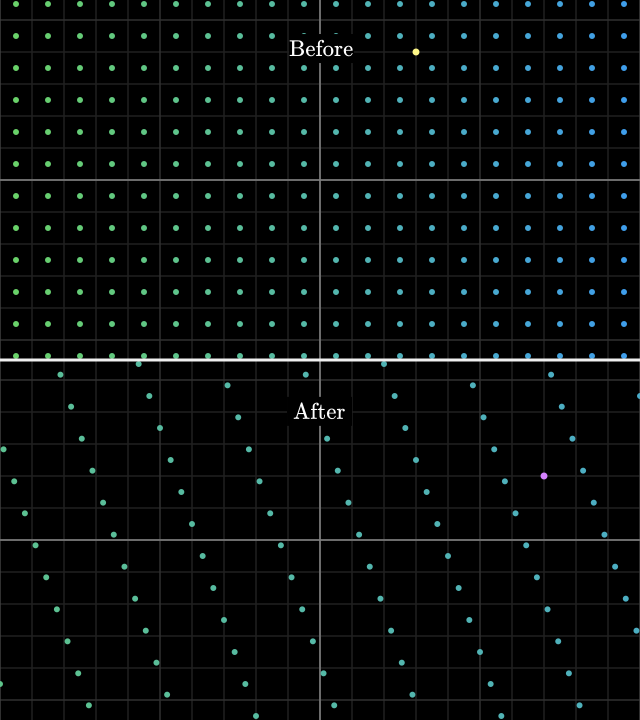
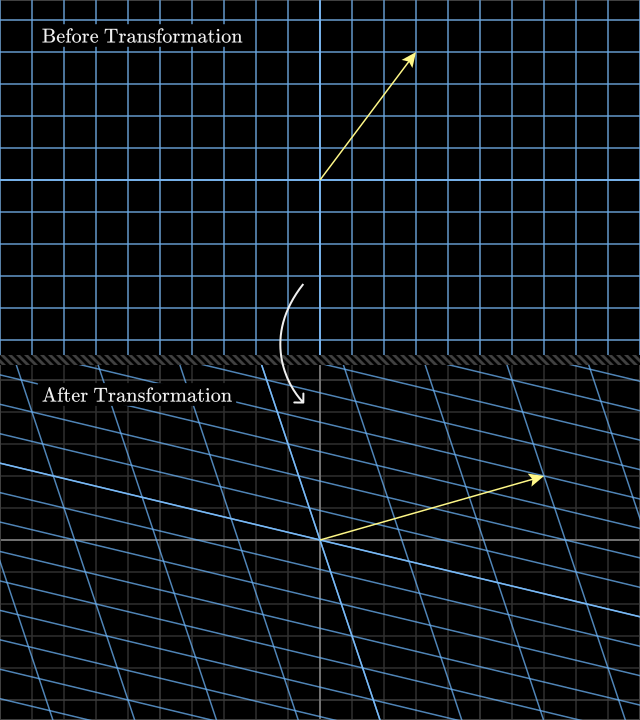
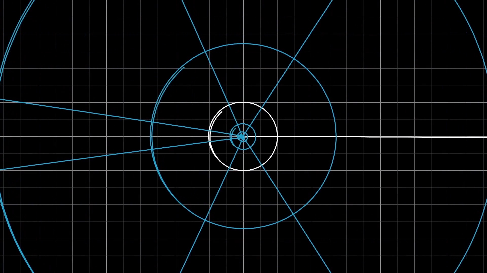
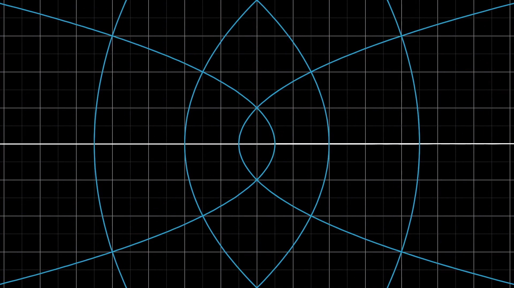
রূপান্তরকে যখন আমরা স্থানের একটি মসূণ আকৃতি পরিবর্তন হিসেবে দেখি, তখন জটিল সমীকরণ নিমেষেই দৃশ্যমান জ্যামিতিক সত্যে পরিণত হয়।
স্থানকে কোটি কোটি উপায়ে বাঁকানো, প্যাঁচানো বা বিকৃত করা সম্ভব। কিন্তু লিনিয়ার অ্যালজেব্রায় আমরা রূপান্তরের একটি বিশেষ ও শৃঙ্খলাবদ্ধ শ্রেণি নিয়ে কাজ করি—যাকে বলা হয় “রৈখিক রূপান্তর” (Linear Transformation)।
জ্যামিতিকভাবে একটি রূপান্তরকে রৈখিক হতে হলে ঠিক দুটি অলঙ্ঘনীয় শর্ত পূরণ করতে হয়: এক, সমস্ত সরলরেখাকে রূপান্তরের পরও সোজা সরলরেখাই থাকতে হবে—কোনো বক্রতা গ্রহণযোগ্য নয়; দুই, মূলবিন্দু $(0,0)$ তার নিজের স্থানেই অটল থাকবে, অন্য কোথাও সরতে পারবে না।
এই দুটি নিয়মকে একত্রিত করলে একটি চমৎকার দৃশ্যমান ফলাফল পাওয়া যায়: স্থানাঙ্ক গ্রিডের সমস্ত রেখা সমান্তরাল এবং সমান দূরত্ব বজায় রাখবে (Grid lines remain parallel and evenly spaced)।
বিপরীতে, যদি মূলবিন্দু সরে যায় কিংবা কোনো সরলরেখা ধনুকের মতো বাঁকা হয়ে যায়, তবে সেই রূপান্তরটি অরৈখিক (Non-linear) বলে গণ্য হয়:
অনুভূমিক এবং উল্লম্ব রেখাগুলো সোজা রাখলেও কোনো রূপান্তর কিন্তু অরৈখিক হতে পারে। নিচের উদাহরণে একটি তির্যক রেখার দিকে তাকান—রূপান্তরের পর কীভাবে সেটি বেঁকে বক্ররেখায় পরিণত হচ্ছে:
দৃশ্যমান মাপকাঠি দুটি: রেখা সরল থাকা এবং মূলবিন্দু স্থির থাকা। এই দুটিকে একসাথে বলা হয়—গ্রিড রেখাগুলো সমান্তরাল ও সমদূরত্ব বজায় রাখে।
এখন আসে লিনিয়ার অ্যালজেব্রার সবচেয়ে গভীর ও বিস্ময়কর সত্য: আপনি কীভাবে একটি রৈখিক রূপান্তরকে সংখ্যার মাধ্যমে খাতায় লিখে রাখবেন? আপাতদৃষ্টিতে মনে হতে পারে, তলের কোটি কোটি বিন্দুর নতুন অবস্থান লিখতে অসীম তথ্যের প্রয়োজন।
কিন্তু উত্তর হলো—না! মাত্র দুটি ভেক্টরের নতুন অবস্থান জানলেই পুরো রূপান্তরটি সম্পূর্ণ নির্ধারিত হয়ে যায়। আর সেই দুটি ভেক্টর হলো আমাদের পরম পরিচিত ভিত্তি ভেক্টর: $\hat{i}$ (আই হ্যাট) এবং $\hat{j}$ (জে হ্যাট)।
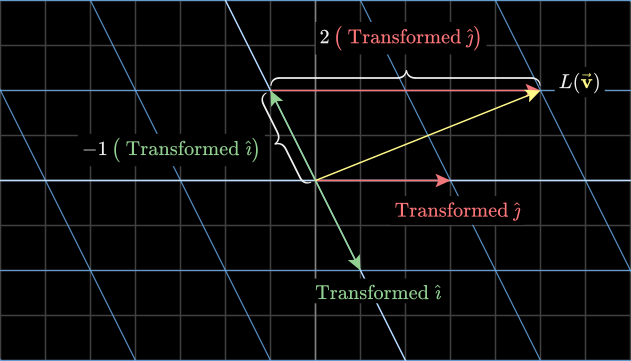
অধ্যায় ২ থেকে আমরা জানি, যেকোনো ভেক্টর $\vec{v} = \begin{bmatrix} x \\ y \end{bmatrix}$ আসলে ভিত্তি ভেক্টর দুটির একটি রৈখিক সমন্বয়: $\vec{v} = x\hat{i} + y\hat{j}$।
রৈখিক রূপান্তরের প্রধান বৈশিষ্ট্যই হলো—এটি রৈখিক সমন্বয় ও অনুপাতকে অবিকল সংরক্ষণ করে। রূপান্তরের পরে গ্রিড লাইনগুলো যেহেতু সমান্তরাল ও সমদূরত্বে থাকে, তাই রূপান্তরিত ভেক্টর $T(\vec{v})$ ঠিক একই স্কেলার $x$ ও $y$ দ্বারা রূপান্তরিত ভিত্তি ভেক্টর দুটির যোগফল হবে: $T(\vec{v}) = x\,T(\hat{i}) + y\,T(\hat{j})$।
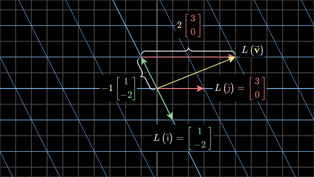
এর অর্থ হলো: যদি আপনি কেবল জানেন রূপান্তরের পর $\hat{i}$ কোথায় গিয়ে পৌঁছায় এবং $\hat{j}$ কোথায় গিয়ে পৌঁছায়, তবে আপনি মহাবিশ্বের যেকোনো ভেক্টরের নতুন অবস্থান একমুহূর্তেই নিখুঁতভাবে গণনা করে ফেলতে পারবেন!
এবার আসা যাক সবচেয়ে গুরুত্বপূর্ণ মুহূর্তে: ম্যাট্রিক্স কী?
ধরা যাক, একটি নির্দিষ্ট রূপান্তরের পর $\hat{i}$ অবতরণ করে স্থানাঙ্ক $\begin{bmatrix} 1 \\ -2 \end{bmatrix}$-এ এবং $\hat{j}$ গিয়ে পৌঁছায় $\begin{bmatrix} 3 \\ 0 \end{bmatrix}$-এ। গণিতবিদরা এই ফলাফল দুটিকে পাশাপাশি সাজিয়ে একটি সুন্দর বন্ধনীর ভেতর $\begin{bmatrix} 1 & 3 \\ -2 & 0 \end{bmatrix}$ হিসেবে লেখেন।
এখানে প্রথম কলামটি হলো রূপান্তরিত $\hat{i}$-এর অবস্থান এবং দ্বিতীয় কলামটি হলো রূপান্তরিত $\hat{j}$-এর অবস্থান!
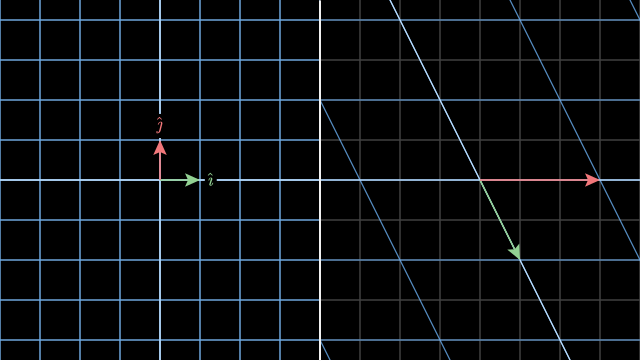
এবার যদি আমরা জানতে চাই ভেক্টর $\begin{bmatrix} x \\ y \end{bmatrix}$ এই রূপান্তরের পর কোথায় যাবে, তবে কেবল সমীকরণে মান বসিয়ে পাই: $x\begin{bmatrix} 1 \\ -2 \end{bmatrix} + y\begin{bmatrix} 3 \\ 0 \end{bmatrix} = \begin{bmatrix} 1x + 3y \\ -2x + 0y \end{bmatrix}$।
আর ঠিক এভাবেই জন্ম নেয় ম্যাট্রিক্স ও ভেক্টরের গুণন! সাধারণভাবে $\begin{bmatrix} a & b \\ c & d \end{bmatrix}\begin{bmatrix} x \\ y \end{bmatrix} = x\begin{bmatrix} a \\ c \end{bmatrix} + y\begin{bmatrix} b \\ d \end{bmatrix} = \begin{bmatrix} ax + by \\ cx + dy \end{bmatrix}$।
ঐতিহ্যগতভাবে স্কুল-কলেজে শেখানো হয়: “সারি দিয়ে কলামকে গুণ করে যোগ করো”—যা শিক্ষার্থীরা মুখস্থ করে ক্লান্ত হয়ে পড়ে। কিন্তু আসল জ্যামিতিক বাস্তবতা হলো: একটি ২×২ ম্যাট্রিক্স আসলে কোনো সংখ্যাতালিকা নয়, এটি একটি দ্বি-মাত্রিক রূপান্তরের সংক্ষিপ্ত রূপ—যার কলাম দুটি নির্দেশ করে $\hat{i}$ এবং $\hat{j}$ রূপান্তরের পর ঠিক কোথায় গিয়ে দাঁড়িয়েছে।
যখনই আপনি কোনো ২×২ ম্যাট্রিক্স $\begin{bmatrix} a & b \\ c & d \end{bmatrix}$ দেখবেন, নিজের মনে বলবেন: “প্রথম কলাম $\begin{bmatrix} a \\ c \end{bmatrix}$ হলো $\hat{i}$-এর নতুন ঠিকানা, এবং দ্বিতীয় কলাম $\begin{bmatrix} b \\ d \end{bmatrix}$ হলো $\hat{j}$-এর নতুন ঠিকানা!”
নিচের ইন্টারেক্টিভ ক্যালকুলেটরে ম্যাট্রিক্সের উপাদান এবং ইনপুট ভেক্টর পরিবর্তন করে দেখুন কীভাবে কলামভিত্তিক রৈখিক সমন্বয়, আউটপুট ভেক্টর এবং নির্ণায়ক $|ad-bc|$ একই সাথে আপডেট হয়।
ম্যাট্রিক্সের চারটি উপাদান $a, b, c, d$ এবং ইনপুট ভেক্টর $[x, y]$ পরিবর্তন করুন। ক্যালকুলেটর তৎক্ষণাৎ কলামভিত্তিক রৈখিক সমন্বয় $x\begin{bmatrix}a\\c\end{bmatrix} + y\begin{bmatrix}b\\d\end{bmatrix}$, আউটপুট ভেক্টর এবং ডিটারমিন্যান্ট $ad-bc$ দেখাবে।
এবার চলুন এই সহজ অথচ শক্তিশালী ধারণাকে ব্যবহার করে কয়েকটি অত্যন্ত গুরুত্বপূর্ণ জ্যামিতিক রূপান্তর বাস্তব চোখে পর্যবেক্ষণ করি।
পুরো দ্বিমাত্রিক স্থানকে ঘড়ির কাঁটার বিপরীত দিকে ৯০° কোণে ঘুরালে $\hat{i}$ সোজা উপরের দিকে $\begin{bmatrix} 0 \\ 1 \end{bmatrix}$-এ এবং $\hat{j}$ বামদিকে $\begin{bmatrix} -1 \\ 0 \end{bmatrix}$-এ পৌঁছায়। ফলে ঘূর্ণন ম্যাট্রিক্সটি হয় $\begin{bmatrix} 0 & -1 \\ 1 & 0 \end{bmatrix}$।
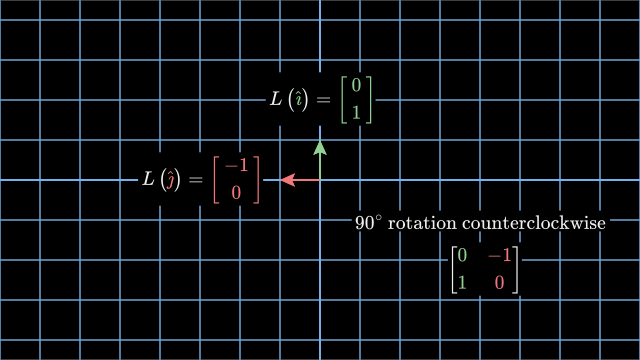
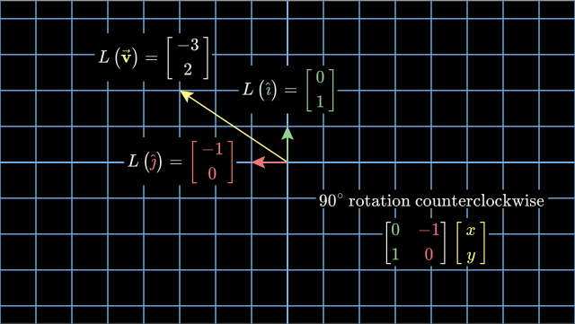
শিয়ারে $\hat{i}$ নিজের জায়গা $\begin{bmatrix} 1 \\ 0 \end{bmatrix}$-এই স্থির থাকে, কিন্তু $\hat{j}$ এক একক ডানদিকে হেলে $\begin{bmatrix} 1 \\ 1 \end{bmatrix}$-এ পরিণত হয়। ফলে ম্যাট্রিক্স হয় $\begin{bmatrix} 1 & 1 \\ 0 & 1 \end{bmatrix}$। বর্গক্ষেত্রগুলো সামান্তরিকে পরিণত হলেও তাদের ক্ষেত্রফল ঠিক ১ এককই বজায় থাকে।
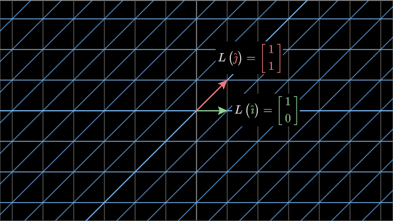
এবার উল্টো দিক থেকে ভাবুন: যদি কোনো ম্যাট্রিক্সের কলাম দুটি $\begin{bmatrix} 1 \\ 2 \end{bmatrix}$ এবং $\begin{bmatrix} 3 \\ 1 \end{bmatrix}$ দেওয়া থাকে, তবে রূপান্তরটি কেমন দেখাবে? একটু থামুন এবং কল্পনা করুন—আই হ্যাট [1, 2]-তে এবং জে হ্যাট [3, 1]-তে অবতরণ করবে।
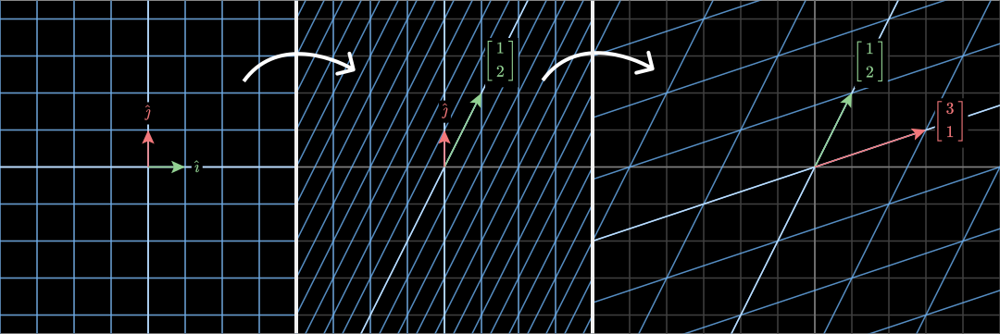
প্রথম কলাম $\begin{bmatrix}1\\2\end{bmatrix}$ বলে দেয় আই হ্যাট কোথায় যাবে, দ্বিতীয় কলাম $\begin{bmatrix}3\\1\end{bmatrix}$ বলে দেয় জে হ্যাট কোথায় যাবে। এই দুটি বিন্দুতে ভেক্টর দুটিকে সরিয়ে বসালেই বাকি গ্রিড স্বয়ংক্রিয়ভাবে সেই আকার নেয়—রূপান্তরটি সম্পূর্ণরূপে নির্ধারিত হয়ে যায়।
যদি $\hat{i}$ ও $\hat{j}$-এর অবতরণ-ভেক্টর দুটি পরস্পরের সমরেখ হয়—যেমন $\begin{bmatrix} 2 & -1 \\ 4 & -2 \end{bmatrix}$, যেখানে দ্বিতীয় কলামটি প্রথমটির $-\frac{1}{2}$ গুণ—তবে পুরো ২ডি সমতল ধসে গিয়ে একটি ১ডি সরলরেখায় পরিণত হয়। এই ক্ষেত্রে নির্ণায়ক শূন্য।
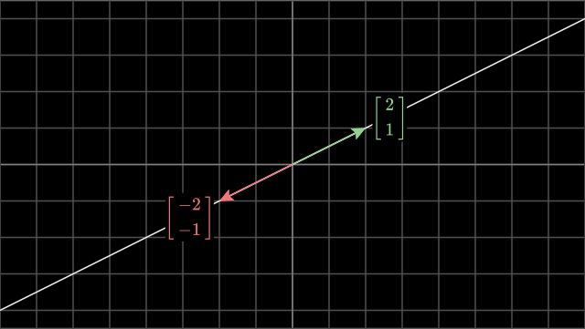
যখন কোনো ম্যাট্রিক্সের কলামগুলো রৈখিকভাবে নির্ভরশীল হয়, তখন সেই রূপান্তরটি স্থানের একটি মাত্রা ধ্বংস করে ফেলে। সমতল চ্যাপ্টা হয়ে রেখায় পরিণত হয়—যার নির্ণায়ক ঠিক $0$।
জ্যামিতিক অন্তর্দৃষ্টি ছাড়াও, বীজগণিতে একটি রূপান্তর $L$-কে রৈখিক বলা হয় যদি এবং কেবল যদি এটি নিচের দুটি মৌলিক নিয়ম মেনে চলে—ভেক্টর যোগ ও স্কেলার গুণনকে অবিকল সংরক্ষণ করে।
এই দুটি শর্তকে বলা হয় সংযোজ্যতা (Additivity) এবং সমসত্ত্বতা (Homogeneity)। এর প্রত্যক্ষ ফলেই মূলবিন্দু সর্বদা স্থির থাকে—কারণ $L(0\cdot\vec{v}) = 0\cdot L(\vec{v}) = \vec{0}$। আর এই কারণেই ভিত্তি ভেক্টরগুলো কোথায় পৌঁছায়, কেবল তার ওপর ভিত্তি করেই সম্পূর্ণ রূপান্তরটি নির্ধারিত হয়।
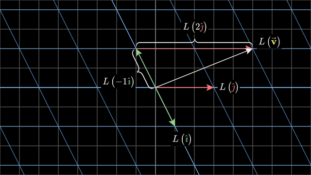
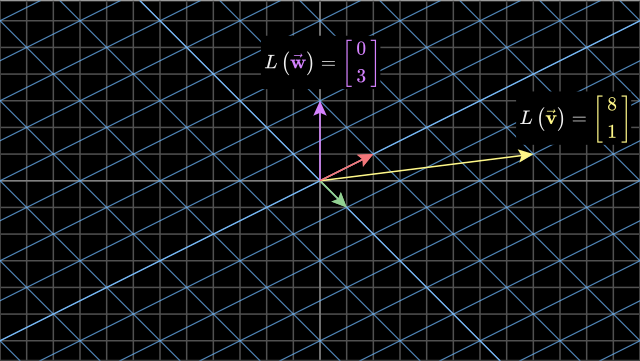
যেকোনো ভেক্টর $\vec{v}$-এর জন্য $L(\vec{0}) = L(0\cdot\vec{v}) = 0\cdot L(\vec{v}) = \vec{0}$। অর্থাৎ সমসত্ত্বতার নিয়ম থেকে সরাসরি প্রমাণিত হয় যে মূলবিন্দু অবশ্যই নিজ স্থানে স্থির থাকবে—এটি কোনো অতিরিক্ত শর্ত নয়, বরং রৈখিকতার স্বাভাবিক ফলাফল।
নিচের ক্যানভাসে সবুজ ভেক্টর $\hat{i}$ এবং লাল ভেক্টর $\hat{j}$-এর শীর্ষবিন্দু টেনে যেকোনো দিকে সরান। রিয়েল-টাইমে দেখুন কীভাবে পুরো গ্রিড বিকৃত হয়, ম্যাট্রিক্স মান আপডেট হয় এবং নির্ণায়ক $\det(A) = ad - bc$ পরিবর্তিত হয়।
ম্যাট্রিক্সকে কোনো সংখ্যার শুষ্ক ছক হিসেবে না দেখে স্থান রূপান্তরের এক জীবন্ত যন্ত্র হিসেবে উপলব্ধি করা লিনিয়ার অ্যালজেব্রার সমগ্র জগৎকে বোঝার সবচেয়ে শক্তিশালী মানসিক ভিত্তি। এটি আয়ত্ত করতে পারলে সামনের অধ্যায়গুলোতে ম্যাট্রিক্স গুণন, নির্ণায়ক, রৈখিক সমীকরণ জোট সমাধান এবং আইগেনভ্যালুর মতো আপাতজটিল বিষয়গুলো অত্যন্ত প্রাঞ্জল হয়ে উঠবে।
অন্যদিকে, এমন অনেক ক্ষেত্র আছে যেখানে আপনি স্থানের বিকৃতি আসলেই বর্ণনা করতে চান—গ্রাফিক্স প্রোগ্রামিং তার একটি দারুণ উদাহরণ। সেখানে ম্যাট্রিক্স কীভাবে এই রূপান্তরগুলোকে প্রতীকী ও গণনাযোগ্য ভাষায় প্রকাশ করে, তা জানা অত্যন্ত সহায়ক।
পরবর্তী অধ্যায়ে আমরা দেখব: কীভাবে একাধিক রূপান্তরকে একের পর এক প্রয়োগ করে নতুন যৌগিক রূপান্তর সৃষ্টি করা যায়—এবং কেন ম্যাট্রিক্স গুণন আসলে রূপান্তরেরই ধারাবাহিক সংযোজন।